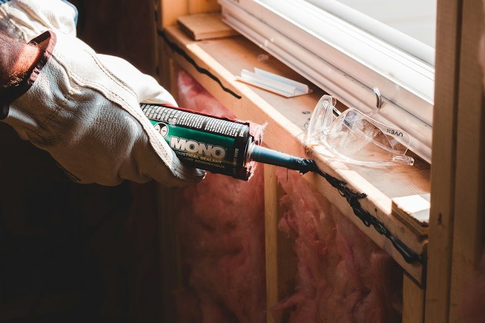

تأسيس وتشطيب
كود البناء السعودي
تمديدات الأسلاك والكهرباء للمنازل
تنفيذ جميع أعمال تمديدات الأسلاك والشبكات الكهربائية من مرحلة التأسيس وحتى التشطيب النهائي بأمان تام.
- • تمديدات الأسلاك وخطوط الكهرباء للغرف والمطابخ والمكيفات
- • تركيب وتبديل لوحات التوزيع والقواطع الرئيسية والفرعية
- • موازنة وفحص الأحمال الكهربائية لمنع الاحتراق وتكرار الفصل
- • فحص نظام التأريض (Earthing) لحماية الأجهزة وسلامة المنزل